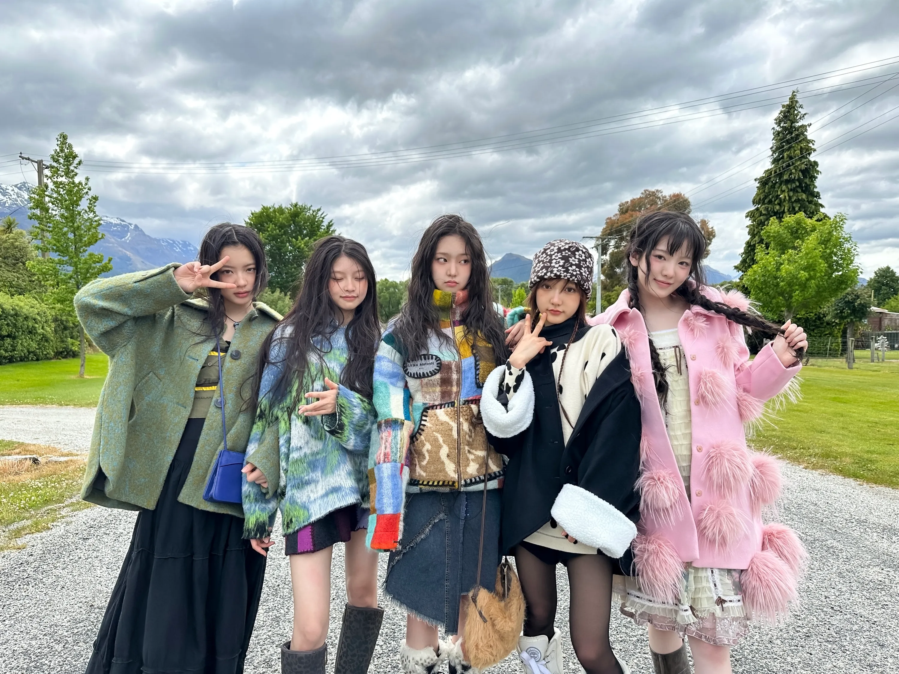

Independent
Creator
Aisen
Design & IT Enthusiast crafting thoughtful digital experiences through the lens of intentional minimalism and technical precision.
Currently exploring the intersection of vintage editorial aesthetics and modern information systems.
View Portfolio arrow_forward
Selected Works
Volume 01
UI/UX Design
Website Pariwisata
IT
Infrastructure
Cloud Systems 2.0
Web
Development
Minimal Frameworks
format_quote
"Craft is the bridge between complexity and clarity. In a world of digital noise, I choose the silence of intentional design."
The
Manifesto